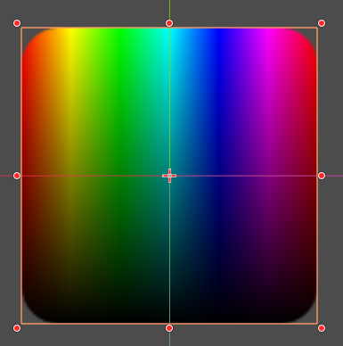

01UV坐标操控
颜色基础
主要记录一下颜色相关内容。色彩空间的描述方式有很多种，常见的描述有RGB，HSB等。知道其每个空间的特性，以及转化还是很有帮助的。
RGB
RGB是我们最常见的描述色彩方式，其以自然界的光谱视角来看颜色。RGB 颜色模型通过以不同强度混合红、绿、蓝光来重现可见光谱的很大一部分。 当这些颜色重叠时，它们会产生青色、洋红色和黄色。
RGB 是加色模型，因为将红、绿、蓝光以全强度组合会产生白色。 加色模式用于照明、电视显示器和计算机显示器。 例如，显示器通过红、绿、蓝像素发光来生成颜色。
在 RGB 模式下，三个组件中的每一个都在 0（黑色）到 255（白色）之间变化。 例如，亮红色的值可能为 R: 246、G: 20 和 B: 50。 当三个值都相等时，结果是一种灰色。 当所有组件都设置为 255 时，颜色为纯白色；当所有组件都设置为 0 时，颜色为纯黑色。

HSB
HSB则基于人类对颜色的感知来描述色彩。HSB 模型描述了三个基本特征：
色相：是从物体反射或透射的颜色。 它以标准色轮上的位置来度量，并表示为 0° 到 360° 的角度。 简单来说，色相是颜色的名称，如红色、橙色或绿色。
饱和度：是颜色的强度或纯度（也称为色度）。 它表示与色相混合的灰色多少，以从 0%（灰色）到 100%（完全饱和）的百分比来度量。 在标准色轮上，饱和度随着您从中心向外边缘移动而增加。
亮度：是颜色的相对明亮度或暗度。 它以百分比形式衡量，从 0%（黑色）到 100%（白色）。

通常也会用一个圆柱模型来描述HSB空间：
空间之间的转化
有些时候会用到两个空间之间的转换公式，从使用角度来说，记一段转换代码即可。这里同时记录一下两者之间的公式表示。
- RGB 到 HSB
其中$\max,\min$分别表示RGB中最大值以及最小值。当RGB值域分别从$0\to 1$时，HSB值域分别为$0\to 360\degree,0\to 1,0\to 1$。
直接根据公式来写这段代码并不困难。使用程序代码，先计算出$\max,\min$然后在根据条件值选取对应计算公式就可以。但是在shader中大量的ifelse语句影响性能，所以shader采用了step来作为选择筛选，最后混合的方式。
社区中流传着一套简洁高效的实现，基于 Inigo Quilez 的经典写法。以godotshader为例，可用如下方式计算混合：
// RGB → HSV
// 返回 vec3(h, s, v)，其中 h ∈ [0,1]，s ∈ [0,1]，v ∈ [0,1]
vec3 rgb_to_hsv(vec3 c) {
vec4 K = vec4(0.0, -1.0 / 3.0, 2.0 / 3.0, -1.0);
vec4 p = mix(vec4(c.bg, K.wz), vec4(c.gb, K.xy), step(c.b, c.g));
vec4 q = mix(vec4(p.xyw, c.r), vec4(c.r, p.yzx), step(p.x, c.r));
float d = q.x - min(q.w, q.y);
float e = 1.0e-10;
return vec3(abs(q.z + (q.w - q.y) / (6.0 * d + e)), d / (q.x + e), q.x);
}
// HSV → RGB
// 输入 vec3(h, s, v)，h 同样在 [0,1] 范围内
vec3 hsv_to_rgb(vec3 c) {
vec4 K = vec4(1.0, 2.0 / 3.0, 1.0 / 3.0, 3.0);
vec3 p = abs(fract(c.xxx + K.xyz) * 6.0 - K.www);
return c.z * mix(K.xxx, clamp(p - K.xxx, 0.0, 1.0), c.y);
}可以在godot的shader中直接如下代码看到HSB空间的平面色相转换
void fragment() {
COLOR.rgb = hsv_to_rgb(vec3(UV.x,1.0,1.0-UV.y));
}其结果如下，水平方向是色相转变，而垂直方向则是亮度由明到暗。
